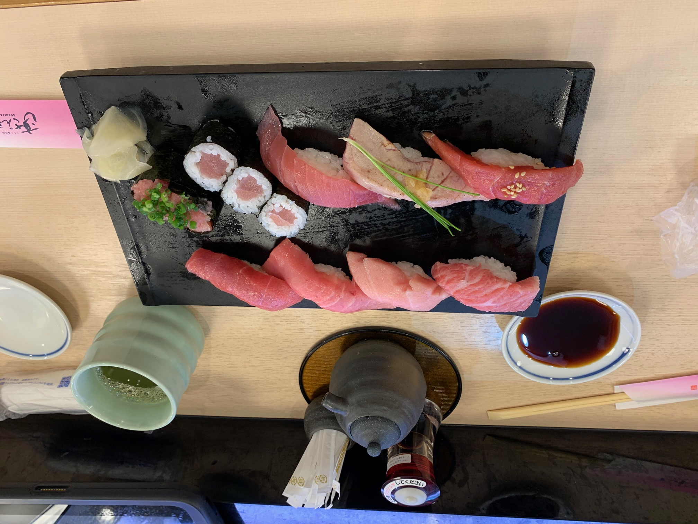

My Trip to Japan
Ever since I was little, it has been my dream to visit Japan. A bucket list item one might say. As luck would have it, my dream ended up becoming a reality when a good friend of mine graduated from medical school. Ashna, an incredibly inelligent and wonderful specimen of a human being, asked if I'd like to join her family for a celebritory trip to Japan because she had finally graduated from medical school. Groveling at the good doctor's feet, I did not hesitate to say (well maybe I did a little from shock), "YES, PLEASE TAKE ME WITH YOU!" In my brief blog about my trip to Japan, I will show you, my fabulous reader, a few of the must go places when your bucket list item is also fulfilled.
Tokyo
Tokyo is the capital of Japan, and has Tokyo City which is similar to New York City in America. In Tokyo there are many beautiful skyscrapers as well as the Tokyo Skytree, which is the world's largest telecom tower. There are so many things to do in Tokyo, but a must see is Shibuya Crossing. Shibuya Crossing is the world's busiest pedestrian crossing, where at its busiest times, ~2,000 people or more cross the multiple intersections at the same time. It is hard to pick a favorite thing from Tokyo, but I would say my favorite moments were right before I went to bed. From my hotel room I could look out over the Tokyo City skyline. The view was so beautifully stunning, and is one that will be forever etched into my memory.

Scuba in the Okinawa Islands, Miyako Island
Japan has a group of islands known as the Okinawa Islands. My travel companions and I traveled to Miyako Island to scuba dive in the Pacific Ocean. Although I am a strong swimmer, I had never been scuba diving before and was a little nervous to try it out. I will be the first to tell anyone reading this, do not let fear or nerves keep you from experiencing the breathtaking beauty of scuba diving. This was by far my favorite part of my trip to Japan. The Pacific Ocean had beautiful clear water, and the fish swam around me without fear. The way the sunlight hit the water and scattered into a million rays to illuminate the ocean floor was a site I had never seen before. I remember being deep enough in the ocean that I could look up at the tidal waves crashing above me, while the water surrounding me was serene. Also, I got to PET A PUFFER FISH! Scuba diving is filled with many moments of inexplainable beauty. Do not miss this opportunity when traveling to Japan.


Bowing Deer Park
Japanese people are some of the kindest and most respectful people I have ever met. After every interaction I had with another person, I was given a slight bow. In Japan, bowing is a form of greeting. The lower the bow, the more respect is given. With this knowledge it should come with no surprise that even the deer bow in Japan. No, seriously, there is a park located in Nara, Japan called Nara park. Here the deer approach visitors holding deer biscuits, and will bow to you in order to receive a treat. It was an amazing experience, and now I can truthfully say that I was able to pet and feed a bowing deer.

Bamboo Forest
There is a place of whimsical beauty in Kyoto, Japan known as the Bamboo Forest. Amidst the tall stalks of bamboo surrounding you, it feels like every fairytale story you have ever heard could be true. The bamboo provides wonderful shade from the brutal heat rays of the sun. Even on an incredibly hot day, the bamboo forest provides a temperature that is nice and cool for its visitors.

Good Eats
I know it would not be a proper travel blog without a foodie section, and I did not come to disappoint. My favorite place to eat food in Japan was in Tokyo at its fresh fish market. Japan is located next to the Pacific Ocean and the fish available to purchase at the fish market is some of the freshest and reddest fish I have ever seen. Be sure to visit the fish market first thing in the morning to aquire the freshest cuts of fish before it is all gone. As any sushi lover would know, it would be a crime to visit Japan and not experience fresh sushi from the fish market. These fresh cuts of fish paired with Japan's sticky rice is a delicacy that is *chef's kiss*. My favorite snack in Japan had to be KitKats. I'm not sure if you all are aware, but Japan does KitKats right. There are countless flavors to pick from and, because I have no self control, I ended up buying most of them. These snacks were the perfect souviner to bring home to my family in America. I even sported a KitKat tasting session where my family and I ranked which flavors were our favorite.
